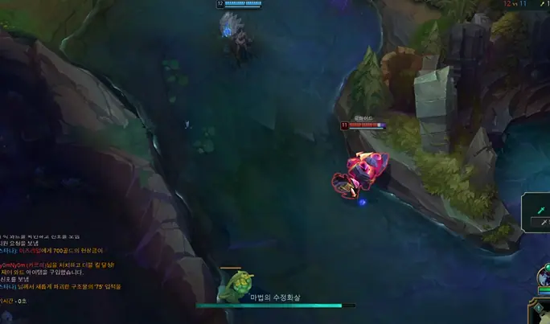

26 · 13 · 8 시간 전 · 원문

잔상을 쓰기 때문
수집 당시 댓글 12개
악덕팬더 · 15 일 전
그건 제 잔상입니다만?
강알리 · 15 일 전
MDLZ · 15 일 전
머임
일파라초 · 15 일 전
니코 분신 세워 논거 아닐까 그게 제일 이치에 맞을듯?
아 니코구나
AMD리싸쑤 · 15 일 전
네녀석이나쁜거야 · 15 일 전
아이젠 씹사기캐 맞다
illiil · 15 일 전
느리구나
헬리오 · 15 일 전
나 샤코아니다 스킨아님?
마자요 · 15 일 전
mczoo · 15 일 전
디리디리리리 · 15 일 전
평범한 경화수월이네


그건 제 잔상입니다만?